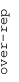
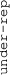

These results are also available as PDF and EPS documents.
Depending on your display resolution, scrolling or zooming may be necessary.
|  |
| 3 |
| 0 |
| -3 |
|  |
| GO_POTASSIUM_ION_TRANSMEMBRANE_TRANSPORTER_ACTIVITY GO_POTASSIUM_ION_TRANSMEMBRANE_TRANSPORTER_ACTIVITY | |||||||||||
| GO_RIBONUCLEOSIDE_MONOPHOSPHATE_BIOSYNTHETIC_PROCESS GO_RIBONUCLEOSIDE_MONOPHOSPHATE_BIOSYNTHETIC_PROCESS | |||||||||||
| GO_ALPHA_AMINO_ACID_BIOSYNTHETIC_PROCESS GO_ALPHA_AMINO_ACID_BIOSYNTHETIC_PROCESS | |||||||||||
| GO_MITOCHONDRIAL_GENE_EXPRESSION GO_MITOCHONDRIAL_GENE_EXPRESSION | |||||||||||
| GO_PRERIBOSOME GO_PRERIBOSOME | |||||||||||
| GO_AXONEMAL_DYNEIN_COMPLEX GO_AXONEMAL_DYNEIN_COMPLEX | |||||||||||
| GO_RETINAL_CONE_CELL_DIFFERENTIATION GO_RETINAL_CONE_CELL_DIFFERENTIATION | |||||||||||
| GO_PEPTIDE_RECEPTOR_ACTIVITY GO_PEPTIDE_RECEPTOR_ACTIVITY | |||||||||||
| GO_CENTRIOLE GO_CENTRIOLE | |||||||||||
| GO_SIGNAL_TRANSDUCTION_IN_RESPONSE_TO_DNA_DAMAGE GO_SIGNAL_TRANSDUCTION_IN_RESPONSE_TO_DNA_DAMAGE | |||||||||||
| GO_SISTER_CHROMATID_SEGREGATION GO_SISTER_CHROMATID_SEGREGATION | |||||||||||
| GO_NUCLEOTIDE_SUGAR_METABOLIC_PROCESS GO_NUCLEOTIDE_SUGAR_METABOLIC_PROCESS | |||||||||||
| GO_CELLULAR_PIGMENTATION GO_CELLULAR_PIGMENTATION | |||||||||||
| GO_RNA_BINDING_INVOLVED_IN_POSTTRANSCRIPTIONAL_GENE_SILENCING GO_RNA_BINDING_INVOLVED_IN_POSTTRANSCRIPTIONAL_GENE_SILENCING | |||||||||||
| GO_ODORANT_BINDING GO_ODORANT_BINDING | |||||||||||
| GO_HORMONE_ACTIVITY GO_HORMONE_ACTIVITY | |||||||||||
| GO_KERATIN_FILAMENT GO_KERATIN_FILAMENT | |||||||||||
| GO_CHEMOKINE_ACTIVITY GO_CHEMOKINE_ACTIVITY | |||||||||||
| GO_TYPE_I_INTERFERON_RECEPTOR_BINDING GO_TYPE_I_INTERFERON_RECEPTOR_BINDING | |||||||||||
| GO_CELL_FATE_SPECIFICATION GO_CELL_FATE_SPECIFICATION | |||||||||||
| GO_HEMOGLOBIN_COMPLEX GO_HEMOGLOBIN_COMPLEX | |||||||||||
| GO_TITIN_BINDING GO_TITIN_BINDING | |||||||||||
| GO_NCRNA_TRANSCRIPTION GO_NCRNA_TRANSCRIPTION | |||||||||||
| GO_SPLICEOSOMAL_COMPLEX GO_SPLICEOSOMAL_COMPLEX | |||||||||||
| GO_RNA_POLYADENYLATION GO_RNA_POLYADENYLATION | |||||||||||
| GO_ERAD_PATHWAY GO_ERAD_PATHWAY | |||||||||||
| GO_DNA_REPLICATION_INITIATION GO_DNA_REPLICATION_INITIATION | |||||||||||
| GO_GOLGI_TO_PLASMA_MEMBRANE_TRANSPORT GO_GOLGI_TO_PLASMA_MEMBRANE_TRANSPORT | |||||||||||
| GO_ATPASE_COMPLEX GO_ATPASE_COMPLEX | |||||||||||
| GO_BASE_EXCISION_REPAIR GO_BASE_EXCISION_REPAIR | |||||||||||
| GO_AUTOPHAGOSOME GO_AUTOPHAGOSOME | |||||||||||
| GO_COTRANSLATIONAL_PROTEIN_TARGETING_TO_MEMBRANE GO_COTRANSLATIONAL_PROTEIN_TARGETING_TO_MEMBRANE | |||||||||||
| GO_TRANSLATION_INITIATION_FACTOR_ACTIVITY GO_TRANSLATION_INITIATION_FACTOR_ACTIVITY | |||||||||||
| GO_REGULATION_OF_TRANSCRIPTION_FROM_RNA_POLYMERASE_II_PROMOTER_IN_RESPONSE_TO_HYPOXIA GO_REGULATION_OF_TRANSCRIPTION_FROM_RNA_POLYMERASE_II_PROMOTER_IN_RESPONSE_TO_HYPOXIA | |||||||||||
| GO_INNER_MITOCHONDRIAL_MEMBRANE_PROTEIN_COMPLEX GO_INNER_MITOCHONDRIAL_MEMBRANE_PROTEIN_COMPLEX | |||||||||||
| GO_GAMMA_AMINOBUTYRIC_ACID_TRANSPORT GO_GAMMA_AMINOBUTYRIC_ACID_TRANSPORT | |||||||||||
| GO_MEGAKARYOCYTE_DIFFERENTIATION GO_MEGAKARYOCYTE_DIFFERENTIATION | |||||||||||
| GO_SYNAPTIC_VESICLE_ENDOCYTOSIS GO_SYNAPTIC_VESICLE_ENDOCYTOSIS | |||||||||||
| GO_RHO_GTPASE_BINDING GO_RHO_GTPASE_BINDING | |||||||||||
| GO_ACID_PHOSPHATASE_ACTIVITY GO_ACID_PHOSPHATASE_ACTIVITY | |||||||||||
| GO_TERTIARY_GRANULE GO_TERTIARY_GRANULE | |||||||||||
| GO_IGG_BINDING GO_IGG_BINDING | |||||||||||
| GO_ICOSANOID_BINDING GO_ICOSANOID_BINDING | |||||||||||
| GO_GLUCOSE_BINDING GO_GLUCOSE_BINDING | |||||||||||
| GO_NEGATIVE_REGULATION_OF_CELL_ACTIVATION GO_NEGATIVE_REGULATION_OF_CELL_ACTIVATION | |||||||||||
| GO_PLATELET_ALPHA_GRANULE_MEMBRANE GO_PLATELET_ALPHA_GRANULE_MEMBRANE | |||||||||||
| GO_EXTRACELLULAR_MATRIX_STRUCTURAL_CONSTITUENT GO_EXTRACELLULAR_MATRIX_STRUCTURAL_CONSTITUENT | |||||||||||
| GO_FATTY_ACID_DERIVATIVE_BIOSYNTHETIC_PROCESS GO_FATTY_ACID_DERIVATIVE_BIOSYNTHETIC_PROCESS | |||||||||||
| GO_REGULATION_OF_ANGIOTENSIN_LEVELS_IN_BLOOD GO_REGULATION_OF_ANGIOTENSIN_LEVELS_IN_BLOOD | |||||||||||
| GO_ADHERENS_JUNCTION_ORGANIZATION GO_ADHERENS_JUNCTION_ORGANIZATION | |||||||||||
| GO_POSITIVE_REGULATION_OF_I_KAPPAB_KINASE_NF_KAPPAB_SIGNALING GO_POSITIVE_REGULATION_OF_I_KAPPAB_KINASE_NF_KAPPAB_SIGNALING |